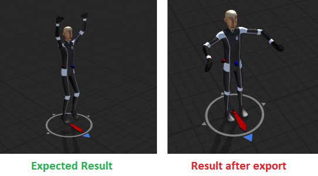
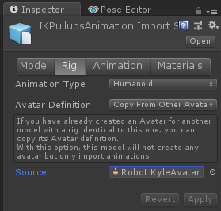
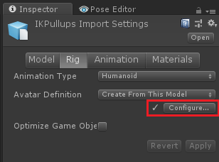
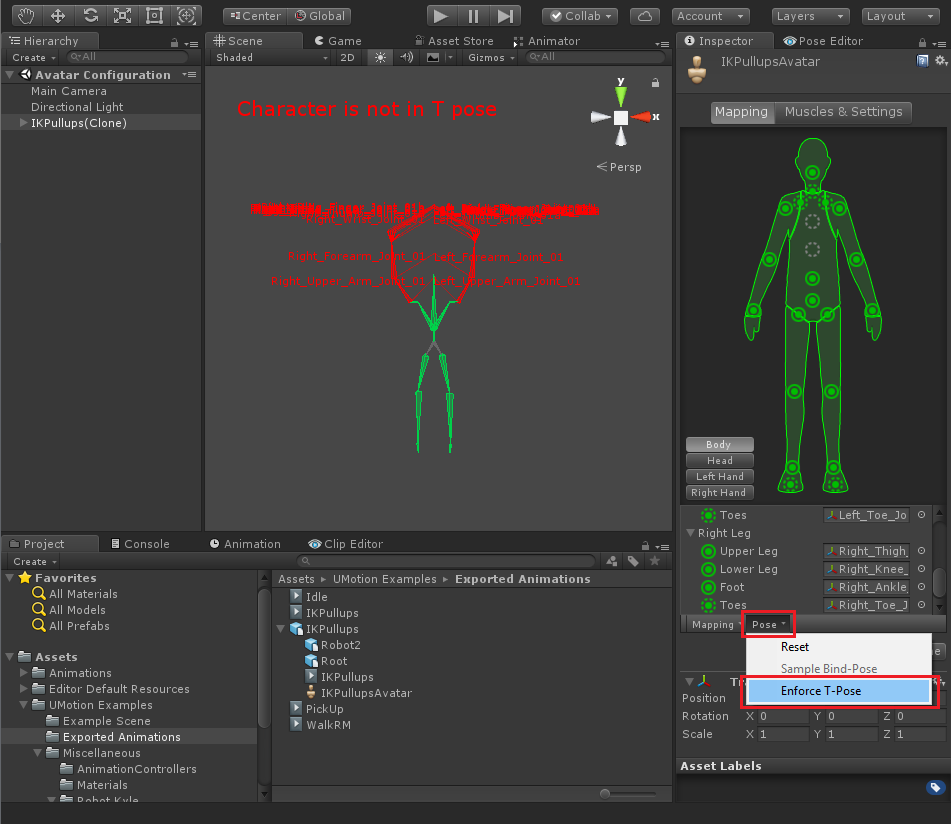
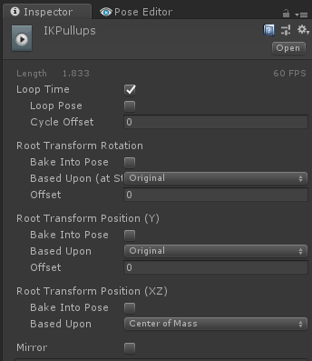
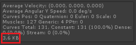

Exporting Animations FAQ
Unity's animation system is a rather complex system that faces you with lots of configuration possibilities. Wrong settings/configurations can make animations exported from UMotion look differently to how they looked inside UMotion or even stop them from playing correctly. Check out the following most common issues and how to fix them:
- Exported humanoid *.fbx looks wrong
- Issues with root motion
- Differences/errors in humanoid animations
- Exported *.fbx has noticable jitter
- IK pinned hand/foot jitter's in the exported animation
- The exported *.anim file size is quite huge
Please contact the Support if none of the solutions work for you.
Exported humanoid *.fbx looks wrong
This usually happens when you exported an animation to *.fbx (e.g. the "IKPullupAnimation" animation from the examples) and configured the exported animation to humanoid. When playing the animation, it looks different to the original animation:
Exporting "IKPullupAnimation" to *.fbx
This happens when the humanoid avatar isn't configured correctly. There are several solutions:
-
Use the avatar of the original character:

Inspector of the exported *.fbx
Depending on the original character's *.fbx this solution might not work (please choose a different one). - Use the Update Existing mode to export your animations into the character's original *.fbx (instead of exporting into separate *.fbx files). This will re-use the characters avatar. See Project Settings to learn more. Don't use this solution if you extended your character with other models (e.g. weapons, equipment).
- Use generic instead of humanoid if you need 100% accurate results. Learn more about humanoids shortcomings below: Differences/errors in humanoid animations
-
You can also manually correct the avatar configuration of your exported *.fbx files. This can introduce some small errors (depending on how well the T-Pose is configured, more on that later). Choose "Create From This Model" for the "Avatar Definition" setting. Click on Apply. Then click on "Configure" to open Unity's avatar configuration editor.

Inspector of the exported *.fbx
Make sure that all bones are mapped correctly and that your character is in a nice T-Pose. Unity's Avatar Editor
Click on "Pose --> Enforce T-Pose" to automatically bring the character into T-Pose. Manually check if the character really is in a nice T-Pose:- The arms must be fully stretched and held horizontally (T-Shape)
- The back of the hands should be pointing upwards, fingers should be stretched
- The feet must be fully stretched and the feet pointing straight forward
Issues with root motion
When dealing with root motion, various issues can occur. Make sure to take a look at the root motion settings of the exported *.anim or *.fbx animation:
Settings in a *.anim Inspector
A description of these settings can be found here: Unity Manual - Clip Properties
Attention: The loop flag in the *.anim settings is overwritten by UMotion's "loop" setting (made in the Clip Settings).
When there is some unwanted root motion, make sure that the keys at the first and last frame of your animation's bone marked as "RM" (in the Animated Property List) has the same values. You can enable "bake into pose" in the Inspector of the exported clip (see image above) if you want to avoid that a root offset contributes to the root motion.
You can globally enable/disable root motion in your Animator Component ("Apply Root Motion").
Differences/errors in humanoid animations
Humanoid is Unity's approach to allow sharing animations between multiple characters. This is how it compares to "generic" and "legacy":
| Humanoid | Generic | Legacy |
|---|---|---|
| Animation Re-Targeting (= play animation on other humanoid characters) | Animation plays only on characters with same bone hierarchy | Animation plays only on characters with same bone hierarchy |
| Reduced animation quality | No quality loss | No quality loss |
| Re-targeting and mecanim state-machine consumes additional CPU power | Mecanim state-machine adds additional CPU load | Fastest CPU timing |
The humanoid animation system abstracts the animation data in such a way, that it can be applied to any correctly configured humanoid (avatar). This abstraction can lead to a visible reduction in animation quality (i.e. reduced degree of freedom on some bones, foot/hand sliding, etc.). Small differences have to be accepted when working with humanoid.
Learn more about humanoid: Unity Blog - Mecanim Humanoids
Usually small errors are acceptable as they most probably won't be notiecable for players. But in cases you need 100% accuracy, use generic instead of humanoid. Consider using legacy in case you want to save some performance (e.g. on mobile). The Animation Converter can help you converting between the different animation formats.
Exported *.fbx has noticable jitter
Jitter/wiggle/stutter can be introduced by animation compression. Select the *.fbx and open the "Animation" tab in the "Inspector". Set "Anim. Compression" to "None" or play with the "Position/Rotation/Scale Error" values.
IK pinned hand/foot jitter's in the exported animation
Fast paced animations that use IK pinning can show some wiggle/jitter on the pinned hand/foot. If you go through the exported animation frame by frame using the frame cursor in Unity's Animation Window you will notice that the animation was exported correctly and the hand/foot is perfectly stable. But as soon as you click on the play button (in the Animation Window), you can notice the jitter of the hand/feet again. This problem is introduced by the interpolation that is happening between key frames and is more noticable the more change there is between two keys. Increasing the framerate of the animation in the UMotion Clip Settings to something like 120 or even 180 fps (then exporting the animation clip again) will reduce the amount of interpolation error.
The exported *.anim file size is quite huge
Please take a look at this support answer for a detailed answer. Long story short: The size a *.anim file has in a built game, is displayed in its inspector.
*.anim inspector shows clip size
The size it has on disk in your development environment is larger due to additional "editor only curves" and probably due to the animation being stored as text.